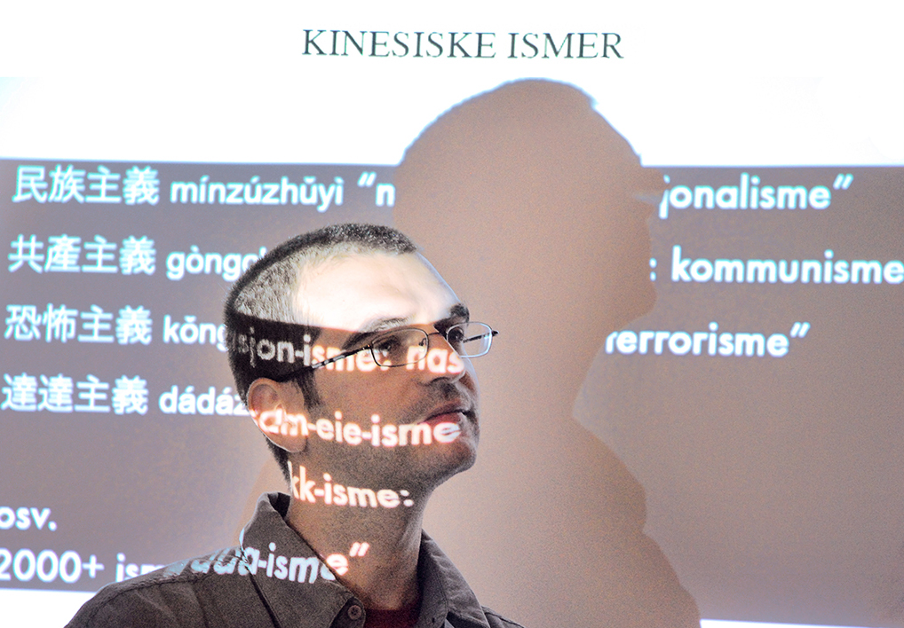

I am a postdoctoral research fellow at the Institute of Culture Studies and Oriental Languages (University of Oslo).
My dissertation was about Isms and Ideology in Modern Chinese. I am currently working on the Dungan language, a variety of Sinitic/Chinese spoken in Central Asia.
Chinese Translations of the Qur'an: A Close Reading of Selected Passages (MA thesis, 2005)
Research interests: linguistics, rhetoric, conceptual history; natural language processing; Chinese, Dungan language and culture, Arabic, Islam; translation, translingual practice; ontologies, classification; second language acquisition; key concepts, key words.
Other interests: The East Asian board game of Go 碁 (igo 囲碁, weiqi 圍棋, baduk 바둑), tango (the dance and the music).
In my current work I attempt to show how the importation of Western isms at the turn of the nineteenth and twentieth centuries formed an important part of the reshaping of the Chinese language and conceptual system. Isms, originally a European conceptual innovation, were eventually imported into all modern languages and became a dominant factor and indicator of change in modern society: concepts such as ‹liberalism› and ‹marxism› transformed not only European history, but also the histories of the East. Historically, isms have played an extraordinary role in China, and the aim of this investigation is to study the modernisation of Chinese intellectual and political life through the conceptual changes concomitant with the interaction between Chinese, Japanese and Western languages. It also explores independent developments of isms in China, since adaptation and re-creation was just as crucial as adoption.
Based on the occurrences of a carefully selected set of historically central isms in a corpus of Chinese source material, I give an analytical account of their status in the Chinese lexicon and conceptual system. The study is pioneering in three respects: (a) it is the first systematic and comprehensive study of Chinese isms; (b) it examines isms within the theoretical frameworks of systematic lexicography (Apresjan 2000) and conceptual history (Begriffsgeschichte, Koselleck 1989); (c) it compares the properties of the Chinese isms with isms in Russian and Arabic (where relevant), giving the analysis a comparative perspective.
"Those who now and in the past have spoken about the art of good government, belong exclusively to two doctrines [zhǔyì 主義], intervention and laissez-faire." Liáng Qǐchāo, writing as an exiled reformist and publicist in 1902, also gives the fuller labels "interventionism" (gānshèzhǔyì 干涉主義) and "laissez-faire-ism" (fàngrènzhǔyì 放任主義), in terms of which he traces the broad lines of political and economic development in Europe since the Middle Ages.
The article in which Liáng sets forth these views illustrates a few points, which together roughly identify the matters I wish to investigate: 1) The same type of abstract concepts is used to make sense of past history and to project the future; 2) The abstract concepts stand for historical forces; 3) The concepts are sweeping, exclusive and reduce things to fundamental principles; 4) The concepts are used to suggest a good policy for China; 5) The abstract concepts are partly defined in terms of each other; 6) The concepts are originally motivated by foreign concepts, but not reducible to them; 7) The concepts are lexicalised into the same morphological mould:
I suggest that what we have here is the fusion of what I call "ismatic concepts" and of what the conceptual historian Reinhart Koselleck has termed "concepts of movement" (Bewegungsbegriffe) — here both in a distinctly Chinese key, given by the situation of China at the time of appropriation, and by the existence of the basic concept ‹zhǔyì› in Chinese, which fuses the two elements. I want to explore this conceptual fusion from two main angles, the conceptual aspect of the emphasis on programmatic ideals on the one hand, and the nature of ismatic categories in Chinese on the other. The connection between ismatic categorisation and forward-looking, programmatic concepts of movement is reflected in the fundamental concept (Grundbegriff) ‹zhǔyì›. This connection is not accidental and moreover constitutes an important part of the modernisation and ideologisation of Modern Chinese intellectual life.
The reception and appropriation of Western scientific and political knowledge was largely filtered through ismatic categories, and this influx of ideas was intimately related to the transformation of the conception of history. Teleological isms provided a model for society which was projected into the future. And ismatic categories provided a rhetorically powerful categorisation device for the organisation of knowledge in categories that are either ideologial, or related in crucial ways to ideological categories. Zhǔyìs qua ismatic categories are as relevant in today's China as they were a hundred years ago, with the addition of consumerist life-style isms next to the ideological ones. It therefore makes sense to speak of a fundamental conceptual change which was a factor in, and indicator of, China's transition from a traditional society to a modern nation. The availability of zhǔyìs in Chinese as the most visible carriers of ismatic categories is a symptom of this change and provides a convenient handle for studying it with the tools provided by linguistics and conceptual history.
Den kinesiske nobelprisvinneren i litteratur Gāo Xíngjiàn har utgitt en essaysamling med tittelen "Uten isme" (Méi yǒu zhǔyì 沒有主義). Selv om tittelen også kan leses som "uten-isme" påpeker Gāo i forordet at han ikke er noen nihilist, og forklarer at han nettopp ikke sogner til noen isme-kategori. Det er ikke underlig at han tematiserer sin mangel på ideologisk tilhørighet, for ideologi-relaterte kategorier —fra ‹nasjonalisme› til ‹føydalisme›— har siden det moderne Kinas tilblivelse vært sentrale begreper i samfunnsdebatten. Det å bekjenne seg til en isme (zhǔyì 主義) og kjempe for den har for mange kinesiske teoretikere og aktivister vært noe positivt: det som skulle til for å gjøre kinesererne til gode samfunnsborgere som kunne bygge et mektig og moderne Kina. Som i Europa hundre år tidligere var ‹patriotisme› et nøkkelbegrep ved moderne republikkers opprinnelse. Det er når moderniseringsprosessen griper om seg i begynnelsen av det tyvende århundre at moderne kinesisk blir til og begreper som ‹kommunisme› og ‹nasjonalisme› nedfelles i ord, 20 år før grunnleggelsen av Kinas kommunistiske parti. Ismene har satt et tydelig preg på det moderne Kinas språk og samfunn, og dermed er temaet for min avhandling nettopp "ismatiseringen" av det kinesiske begrepsapparat. Å forske på kinesiske ismer er å forsøke å forstå moderniseringen og ideologiseringen av Kinas intellektuelle, sosiale og politiske liv.
Noe av det fascinerende ved ismene er at de typisk forener det stereotype og ideologiske i ett og samme begrep. Bevegelsesbegreper som ‹kommunisme› foregriper på den ene side en fremtidig (gjerne ideal) samfunnsform, på den annen side står de for aktiviteter som skal realisere fremtidsvisjonen — tilsammen en ideologiansats. Med utgangspunkt i ideologikritikk får en verdenssynskategori innpass som stereotyp i mange forskjellige områder av samfunnslivet. Man setter folk i bås og skjærer alle (påståtte) "kommunister" over én kam (mccarthyisme!), de kan angripes under tilsidesettelse av sin menneskelighet. Også ismer som ikke er fremtidsutkast, og heller ikke nødvendigvis har noe teoretisk grunnlag, har denne egenskapen: så snart en handling omtales som "terrorisme", er den fordømt og berøvet enhver legitimitet. Ismenes intensitet har etymologiske røtter (gresk), men hovedkilden til deres slagkraft er i at de reduserer alt til grunnprinsipper, som et ledd i en abstraksjonsprosess. Denne tendensen til forenkling har positive sider (pedagogikk, systematikk), men nettopp også negative (stigmatisering, diskurspolarisering).
Kinas modernisering innebar en gjennomgripende ideologisering av språket. Ifølge essayisten Chén Yuán var det tiden "da 'mennesker' ble til [uønskede] 'elementer'", med andre ord da ismene grep slik om seg at menneskene ble til "-ister". Som ord ble ismene innført via japansk av kinesiske studenter i Japan rundt århundreskiftet. I begynnelsen av det 20. århundret spilte de en viktig rolle i resepsjonen av vestlig og japansk tankegods, både som pedagogisk-kategoriserende hjelpemiddel og som alternative fremtidsutkast hos revolusjonære (men mange hadde ingen vestlige forbilder: ‹edukasjonalisme› og Sun Yat-sen's ‹tre[3]-FOLK-isme›). Etter hvert som den politiske og militære polariseringen på slutten av 1920-tallet begynte å ta over etter krigsherrekaoset, ble ismene også i økende grad brukt som politiske våpen i kraft av sin stigmatiserende og manipulerende funksjon; Máo Zédōng var en mester i nettopp dette. Det oppstod tidlig en debatt i Kina om hvorvidt det å tenke og agitere med ismer var en god ting. Kritikerne hevdet at det bare gjorde "konkrete forslag til abstrakte substantiver", og dermed var farlige og misvisende. Tilhengerne viste til ismenes funksjon som veivisere inn i fremtiden og slagord man kunne bygge det nye samfunnet med. Uansett standpunkt var ismene som nøkkelbegreper kommet for å bli.
Mail
Mobile: +47 936 91 204
Phone: 228 58103
Office: PAM 428, Blindern Campus